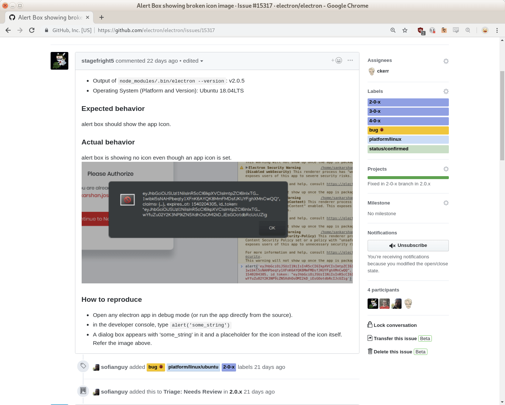

## Electron Hacking for Beginners
A gentle introduction
to a very large codebase
XXX
Hi, I'm Charles Kerr. I'm part of the Electron team at Microsoft.
Before that I worked for about five years on Ubuntu Linux,
and before that I wrote most of the BitTorrent app named Transmission.
So I've done open source for awhile now.
Electron's developer community is high-quality, but small.
This walkthrough shows how get started on Electron in three sections:
The Tools (getting and building the code)
The Code (understanding the code)
Putting It Into Practice (changing the code)
Why Get Involved?
Scratch an itch
More first-class desktop apps everywhere
Maybe find a more interersting job?
Use existing skills and learn new ones
#### Part 1 of 3
## The Tools
XXX
Okay so let's start with the tools.
### OS-specific prerequisites
Instructions at [electronjs.org/docs/](https://electronjs.org/docs/development/build-instructions-gn)
You've probably done this before.
* Ex: installing Python 2.7 on macOS with `brew`
* Ex: installing [Node.js](https://nodejs.org/)
XXX
There are platform-specific tools you need to install first.
These are documented at electronjs.org/docs and I'm going to skip past them because most developers have already used or heard of these and so ... they're not scary.
For example if you're attending an Electron conference, you've probably installed Node
And if you're attending an Electron conference and have a Mac, and you've probably installed something using homebrew.
So moving right along...
What gets built?
Electron, Node, and Chromium
...and Node's dependencies, like brotli, http_parser, llhttp, nghttp2, v8, zlib
### So that's a lot of code?
```sh
~/electron/electron-gn/master/src$ cloc *
20,582,258 C++
7,477,199 C/C++ Header
7,116,240 JavaScript
3,857,228 C
2,143,884 Python
245,664 Typescript
...
SUM: 59,751,830
```
**Yes.**
XXX
All that adds up to about 60 million lines of code.
And here I think is where the reputation comes from,
and why Electron doesn't get as many casual code submissions.
If you find a bug, where do you even start?
Even if you just want to build it, where do you start?
Imagine how many repos you have to clone for that.
Imagine even tracking the dependencies to know what repos you'd need and keeping them all in sync.
### Introducing `e`
The Electron build tool
```sh
FIXME: this is not readable. Need a better slide to introduce e.
$ e
Usage: e [commandArgs...]
Electron build tool
Commands:
init [options] <name> Create a new build config
sync [gclientArgs...] Get or update source code
make [options] Build Electron and other things
run Run the Electron executable
node Run the Electron build as if it were a Node.js executable
debug Run the Electron build with a debugger (gdb or lldb)
use Use build config when running other `e` commands
show Show info about the current build config
test [specRunnerArgs...] Run Electron's spec runner
pr [options] Open a GitHub URL where you can PR your changes
patches Refresh the patches in $root/src/electron/patches/$basename
```
XXX
FIXME: write script for this slide
`e` based off `nvm` which is node version manager
FIXME: another ugly slide
* `e init`: set up a new configuration for a specified directory, build type, compile flags, etc.
* `e sync`: get or update the source code
* `e make`: build it
* `e init --bootstrap`: does all three
* `e init --root=~/electron --bootstrap testing`
* Creates a new configuration named 'testing' to live in `~/electron`
* Checks out all the code (this will take a long time)
* Builds it (this will take even longer)
XXX
FIXME: write script for this slide
Part 2 of 3
The Code
The Chromium modules that Electron uses most
```sh
$ rg --no-filename '^#include "' \
| grep -v -e shell -e electron \
| perl -pe "s/\"(\w*?)\/(?:.*)\"/\$1/" \
| grep -v '\.h"' | sort | uniq -c | sort -nr | head -n8
972 #include base
423 #include content
358 #include ui
145 #include third_party
106 #include components
98 #include gin
95 #include extensions
92 #include services
```
Their size
```sh
$ cloc --quiet --json base content ui third_party/skia \
third_party/blink components gin extensions services \
| json SUM.code
11,645,172
```
XXX
Well, that presentation might go long.
So instead I've grepped to see which Chromium modules Electron uses most.
And if we look at the top matches,
that brings the number down to 11 million.
Only 11 million! That's nothing.
By the way, that's a cognitive bias technique called anchoring.
These 11 million are what matter, but if I'd started the talk
with that, it would look pretty scary. This way, you know it's
a cakewalk compared to 60 million — you've got this.
So for the next few minutes let's do an exhaustive deep dive into
those mere 11 million lines of code.
FIXME: don't panic! this will take about FIXME minutes
gin/convenience utilities for the JavaScript engine v8
blink/rendering and layout
ui/gfx/simple graphics classes
ui/views/framework for using native windows
content/the core needed for a multi-process sandboxed renderer. (More about this in a moment.)
components/components that have content/ as the uppermost layer they depend on (eg. printing)
services/cross-platform management of services
Chromium's Content Module: Public API
(src/content/public/)
app/
browser/
child/
common/
renderer/
test/
Chromium's Content Module: Content Shell
(src/content/shell/)
android/
browser/
common/
gpu/
renderer/
utility/
Electron's JavaScript Modules
(src/electron/lib/)
browser/
common/
content_script/
isolated_renderer/
renderer/
sandboxed_renderer/
worker/
Electron's C++ Modules
(src/electron/shell/)
app/
browser/
common/
renderer/
utility/
So if you need context on electron/shell/browser/atom_browser_client:
You know a reference impl is at content/shell/browser/shell_content_browser_client.cc
You know the parent class is at content/public/browser/content_browser_client.h
And when you open up content/public/browser/content_browser_client.h...
// Embedder API (or SPI) for participating in browser
// logic, to be implemented by the client of the content browser.
// See ChromeContentBrowserClient for the principal impl.
// The methods are assumed to be called on the UI thread unless
// otherwise specified. Use this "escape hatch" sparingly,
// to avoid the embedder interface ballooning and becoming
// very specific to Chrome.
class CONTENT_EXPORT ContentBrowserClient {
// Allow the embedder to control if an AppCache can be used
// for the given url. This is called on the UI thread.
virtual bool AllowAppCache(const GURL& manifest_url,
const GURL& first_party,
BrowserContext* context);
FIXME: is this content needed?
FIXME: there is no flow from previous slide
FIXME: this slide is even uglier than the others
**Excerpt from Electron's largest class, atom::api::WebContents**
```cpp
void LoadURL(const GURL& url, const mate::Dictionary& opts);
base::string16 GetTitle() const;
bool IsLoading() const;
void Stop();
void ReloadIgnoringCache();
void GoBack();
void GoForward();
bool IsCrashed() const;
void SetUserAgent(const std::string& user_agent);
std::string GetUserAgent();
void InsertCSS(const std::string& css);
void OpenDevTools(mate::Arguments* args);
```
XXX
This is the largest class we've got.
And, while the size of the whole project can be overwhelming,
the individual pieces aren't actually that scary.
To be clear: no, I'm not saying Electron is easy.
Some of it is, but a lot of it isn't.
But if you've written Electron apps,
if you've used `win.loadURL()` or `win.getTitle()`,
you already see the big picture, and that can be your guide
when you're reading and learning the littler pictures.
Part 3 of 3
Taking Action

Final thoughts on the codebase
Electron is a good project for someone who knows X and wants to learn Y
You already understand more than you think
Don't Panic
XXX
make sure we have a fresh build
let's run electron-quick-start
open devtools
and pull up an alert dialog.
sure enough.
Now, I'm pretending for this example I don't know whether Electron is using a GtkMessageDialog, a GtkDialog, or not using those at all but instead creating a custom GtkWindow.
But I do know whatever it's using, that icon is getting shown by a call to gtk_widget_show(), because that's what every GTK+ widget uses, no matter what type of class is aggregating it.
So I'll run the same test again inside a debugger and set gtk_widget_show() as a breakpoint.
open devtools again...
set the breakpoint... gdb is kind of slow.
the alert again...
cool. let's see where it's coming from.
ok this noise here is C++'s version of the green terminal windows in the matrix. You get used to it.
first thing I see here is it's in atom/browser/ui/message_box_gtk, which means it's likely our bug.
I see an argument named 'icon' of type imageskia, so maybe someone is passing in a broken icon.
let's open up atom/browser/ui/message_box_gtk line 49 and take a look.
here's where the dialog is created, and sometimes these use a default icon depending on the dialog type.
let's go back to the debugger and see what type was passed in.
looks like that type is atom::MESSAGE_BOX_TYPE_NONE, so that's not the problem.
Next I see us setting the dialog's image property if that imageskia isn't null.
let's go back to the debugger and check.
walk up the callstack
and icon.isNull() is _true_, so this block of code is never reached, so this isn't the problem either.
what else calls gtk_widget_show().
here's a call that only happens when we have a checkbox label... that's not going to be it, but just for fun let's ask the debugger what checkbox_label is --
yep, checkbox_label is an empty string.
so let's keep looking for gtk_widget_show() calls.
AH now this is promising.
gtk_widget_show_all() tries to show its whole subtree of widgets, of UI components.
So maybe what's happening is GtkMessageDialog _always_ has an icon widget, but it's just not shown when the icon property's not set.
If so, this call here would show that unset icon.
That would be consistent with the no-icon symbol.
Let's see what happens if we remove the `_all()` from this.
rebuild
restart the process
pop up devools
show an alert
there we go!
We got it.
And although I knew some GTK+ to solve this bug, this one didn't really take any Electron.
(fast transition to)
What Have We Learned?
Whether you know Electron, GTK+, Chromium, Node.js, Windows, JS, C++, Obj-C, Carbon, Linux, or Docker... those are all skills that you can use on Electron.
### Thanks for listening!
#### Further reading
* https://electronjs.org/docs/development
* https://cs.chromium.org/
* https://www.chromium.org/developers/how-tos/getting-around-the-chrome-source-code
* https://www.patreon.com/sindresorhus